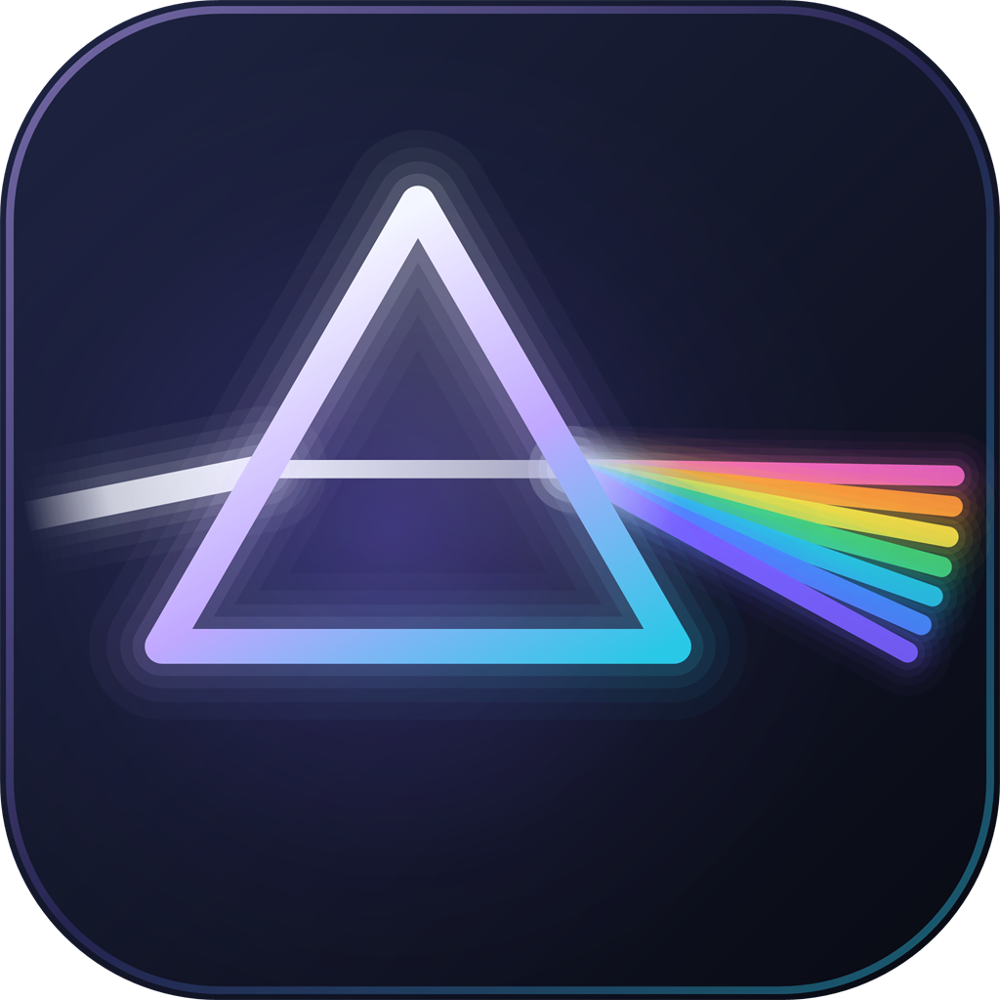

The best mod menu for Infinite Warfare Zombies
Prismline is an in-game mod menu for Call of Duty: Infinite Warfare Zombies on Steam. Press F5 and change points, weapons, zombies, powerups and more, without installing anything into the game folder.

Small, tidy and easy to remove
The loader injects the menu into the running game, so your game files are never touched. Press Eject and everything is put back. The menu is a plain dark panel you drive with the arrow keys or the mouse, with the pages grouped the way you would look for them.
No game files changed
The loader and the menu live in their own folder. The game folder stays as Steam left it.
Always the current build
Every time the loader opens it checks for a newer, signed release and swaps the files in by itself.
Remembered between runs
Toggles, hotkeys and theme live in config\menu.ini next to the loader, so updates never reset them.
Download, activate, press F5
One zip, no installer. Extract it, run the loader, and the menu is ready.
- Download and extract the zipRight-click the zip and choose Extract All into a folder of its own, for example
C:\Prismline. Keep the files together:PrismlineLoader.exe,PrismlineMenu.dlland thedatafolder. - Run the loader and activateOpen
PrismlineLoader.exe, paste your license key and press Activate; it is remembered. The Updates row checks for a newer build each time it opens. - Open the game, then press InjectStart Infinite Warfare and wait for its main menu, then press Inject in the loader. Or switch on inject when the game starts.
- Start your match and press F5Start your Zombies match after injecting. F5 shows the menu, F6 hands the mouse back to the game while it stays up.
config folder is never touched. To remove everything, press Eject and delete the folder.Questions people ask
Does it change my game files?
No. The loader injects the menu into the running game. Pressing Eject (or closing the game) puts everything back as it was.
Can I use it online?
It is built for your own Zombies matches. Most features are done by the game's own scripts, which only run on the host, so in a public match you do not host they cannot work. Using it in public lobbies you do host is at your own risk.
The menu does not show up when I press F5.
Make sure the loader says the game is running and Prismline is loaded, and that you started your match after injecting. If you injected during a match, restart it. If the game runs as administrator, run the loader as administrator too.
Windows says the file might harm my PC.
The loader is a small program that injects into another program, and it is not code-signed, so SmartScreen and some antivirus tools may flag it. Only download it from this page or the GitHub repository, and judge for yourself whether you trust it.
Where do I get a license key?
Message c8.dylan on Discord.
How do I update?
You do not need to do anything: open the loader and it fetches the newest release. The Updates row tells you the result.